Adding Hand Engine Support to Your Unreal Project
NOTE:
- Please ensure all gloves have been paired and calibrated in Hand Engine.
- This plugin is compatible with Unreal Engine 5.0 or later, you can download them from the downloads page on our website.
- If you are running Unreal 4, you will need to download the TCP streaming plugin and follow these steps here.
- In this example, we will use Unreal 5.0.3
If you do not have an existing project, create one first:
- Launch Unreal Editor 5.0.3
- Create a new project:
- Select the Games category on the left side of the screen, then select the Blank template.
- In the Project Details tab on the right side of the screen, select the C++ option
- Name your project, take note of the Project Location directory it is created in, then click Create.
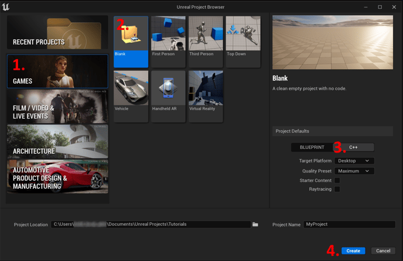
- Once the project has been created, close Unreal Editor so we can import the StretchSense Studio Plugin for Unreal.
If you already have an existing project:
- Navigate to your Project Location directory on the disk
- Open the Plugins folder of your project. If a Plugins folder does not exist then create it first.

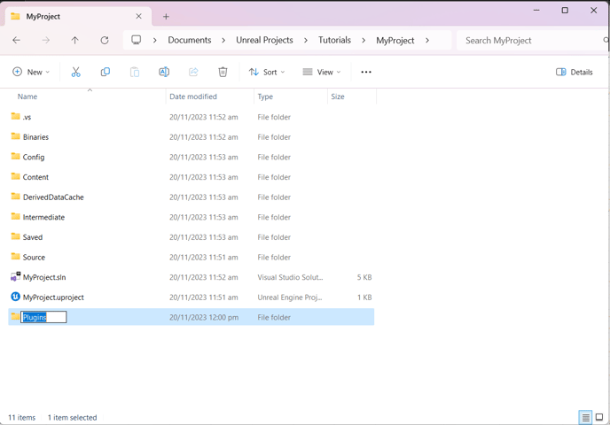
- From the StretchSense_Studio_Unreal_V.X.X.X zip file, go into the StretchSense_Studio_Unreal_VX.X.X/5.0 folder and copy the HandEngineLiveLink folder into your project’s Plugins folder
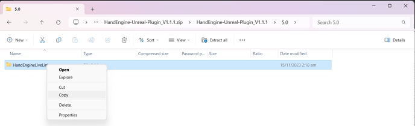

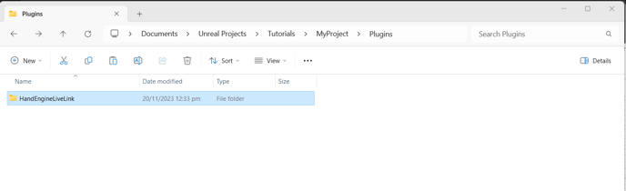
- Reopen your project in Unreal Editor 5.0.3.
- Go to Edit → Plugins and ensure the following plugins are enabled:
- HandEngineLiveLink
- Live Link
- Live Link Control Rig
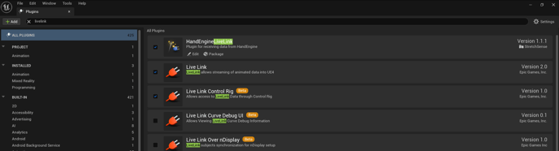
- To ensure all of the Plugin content will be visible in your project hierarchy, go to your project’s Content Browser, then click on the Settings button in the top right corner of the Content Browser, then ensure all of the items in the Content section are ticked.
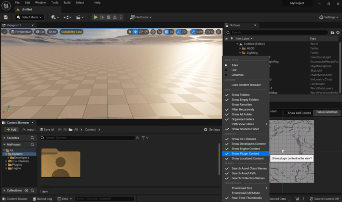
- Ensure the Unreal Mannequins are added to your project.
- If they were not already previously imported to your project, or are already part of your project template, there are a few ways to add them:
- Using the Unreal Content Packs:
- In your project’s Content Browser, select +Add, then select Add Feature of Content Pack…, then select ThirdPerson from the Blueprint tab. All of the Mannequin asset files will be included in the Content → Characters subfolder of your project.
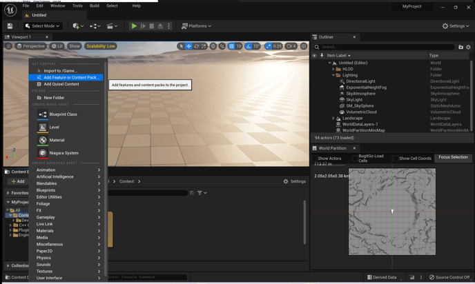
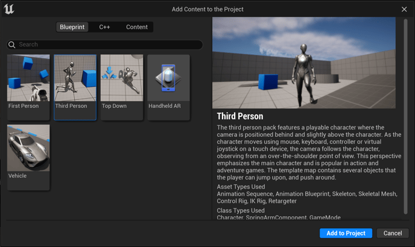
-
-
- Via the Epic Games Marketplace:
- In your project, go to Window → Open Marketplace, then search for and download the free Mannequins Pack from Epic Games.
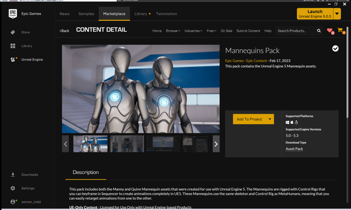
-
-
-
- From the Epic Game Launcher, select Unreal Engine from the categories on the left of the launcher window, then select Library, then scroll down to the Vault section to see the Mannequins Pack you just downloaded. Click Add to Project, then select your project.
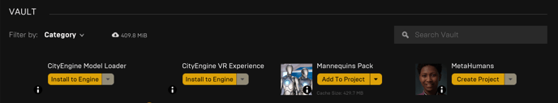
- If you are using Unreal MetaHumans in your project, you will need to import your MetaHuman(s) into your project via Quixel Bridge. These will be added to the All → Content → MetaHumans folder in your project
- Ensure Hand Engine is running. Plug in your StretchSense dongle to an available USB port, put both Studio gloves on and turn them on, then open Hand Engine and connect to and calibrate your gloves in Hand Engine. Hand Engine automatically begins streaming hand animation data that Unreal can connect to.
- Add the Hand Engine Live Link device to your scene:
- In your Unreal project, go to Window → Virtual Production → Live Link
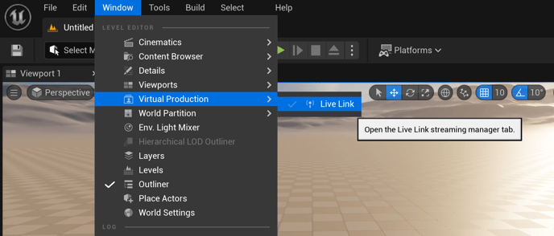
-
- Click +Source → HandEngine → OK. After a few seconds Default_Left and Default_Right will appear with green lights under HandEngineLiveLink in the Subject pane.
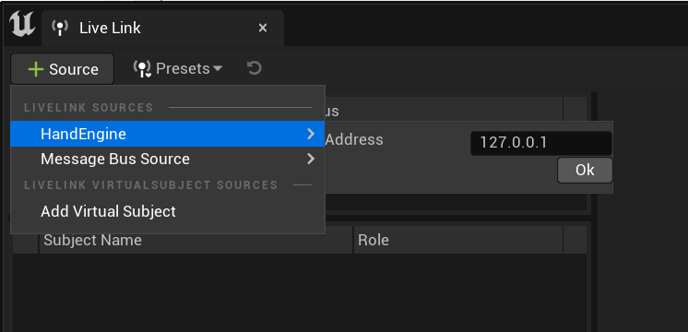
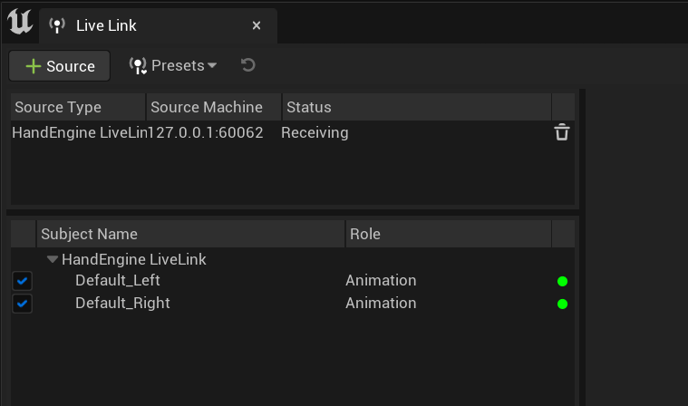
-
- You can close or minimize the Live Link window at this point.
- Adding Hand Engine support to an Unreal Mannequin to your scene:
- Go to Plugins → HandEngineLiveLink Content → HandEngine_Rig_Examples → Manny, then drag the HandEngine_Rig_Example_Manny Blueprint Class into your scene. The same blueprint class for Quinn is available in Plugins → HandEngineLiveLink Content → HandEngine_Rig_Examples → Quinn.
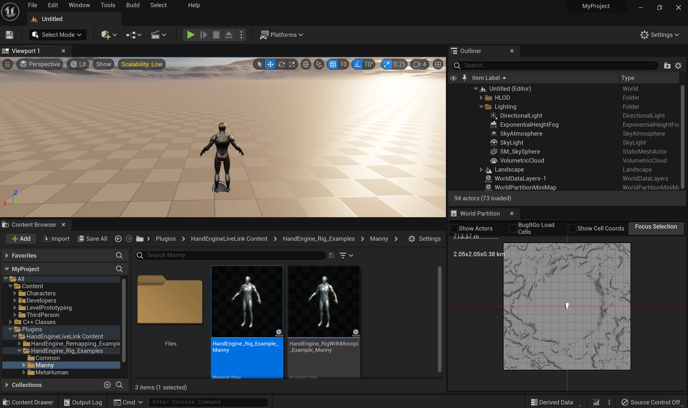
-
- Initially you may not see the Manny character appear in your scene even though HandEngine_Rig_Example_Manny appears in your Outliner pane. If this is the case, in the Outliner pane on the right of the screen, click Edit HandEngine_Rig_Example_Manny… to open the file in the blueprint editor
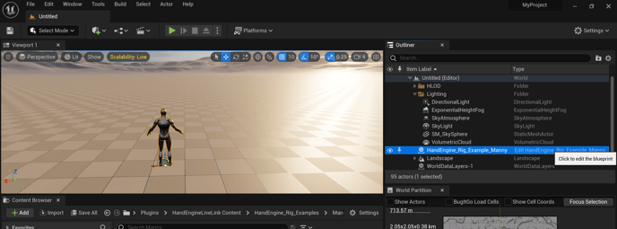
-
- In the Components window on the left of the blueprint editor, select the Target_SkeletalMesh item, then in the Details pane on the right side of the screen, in the Mesh section, click the dropdown list for Skeletal Mesh and select either SKM_Manny or SKM_Manny_Simple.
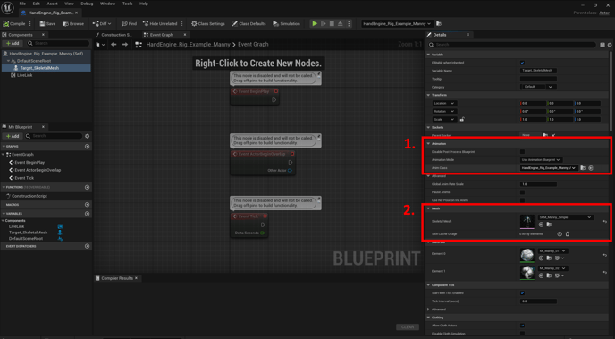
-
- In the blueprint editor, click Compile, then click Save, then close the blueprint editor. Now you can see Manny in your scene.
- In your main scene, click Play. You may be prompted to select a new skeleton for the Anim Blueprint HandEngine_Rig_Example_Manny_ABP, in which case select Yes, then select SK_Mannequin which will relink the blueprint to the SK_Mannequin skeleton asset file in your project.
- Compile and Save HandEngine_Rig_Example_Manny_ABP, then return to your main scene and click Play.
- Adding Hand Engine support to an Unreal MetaHuman in your scene:
- In your Content Browser, go to All → Content → MetaHumans → <your metahuman name>.
- Click and drag the main Blueprint Class for your MetaHuman into your scene. Typically this file is called BP_<metahuman name> e.g. BP_Sook-ja.
- NOTE: It can take some time for the MetaHuman character asset to render in your scene
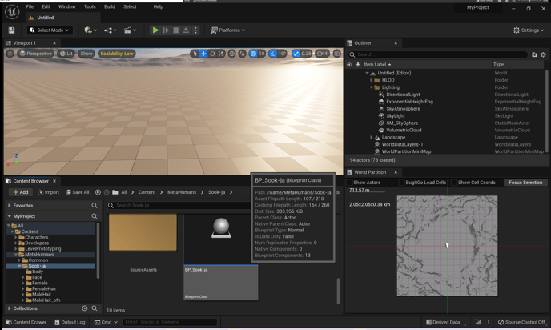
-
- In the Outliner pane of Unreal, click Edit BP_<metahuman name>…
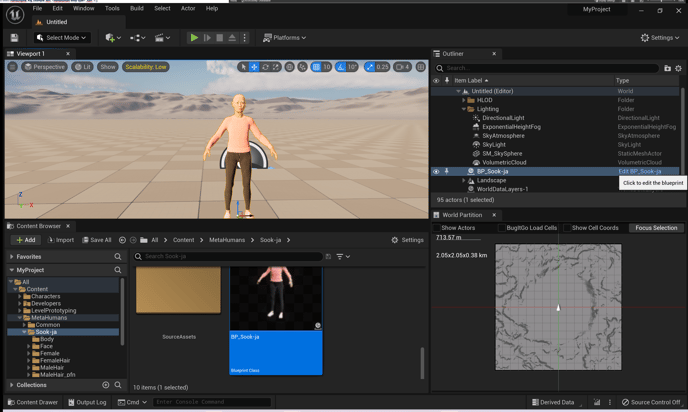
-
- In the Components pane on the left side of the editor window that pops up, highlight Body, then in the Details pane on the right side of the editor window, in the Animation section, ensure Animation Mode is set to Use Animation Blueprint, then click the drop down next to Anim Class and select HandEngine_Rig_Example_MH_<metahuman body type>_ABP, e.g. HandEngine_Rig_Example_MH_FeMeNo_ABP for a MetaHuman that is Female, Medium build, and Normal weight.
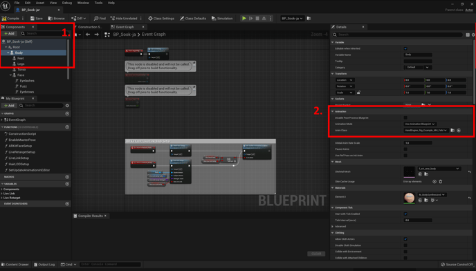
-
- Click Compile, then Save for your MetaHuman’s blueprint.
- Return to your main scene and click Play to see your MetaHuman’s hands animated live by Hand Engine.
Enabling Pose Mirroring on your Mannequin or MetaHuman Character
If the preconfigured Pose Assets used in the retargeting examples do not suit your character and you want to create your own Pose Asset with bespoke reference poses in it, you can use the Live Mirror Pose Post Processing blueprint to streamline this task.
With this blueprint enabled on your character, any posing of the left arm and hand of the character will be automatically reflected on the equivalent right side bones to save you from having to repeat the pose twice when creating each one.
NOTE: The Live Mirror Pose blueprint works for any character that shares the same bone naming convention as a mannequin or MetaHuman asset.
- Open the skeletal mesh of your character by opening the asset of the character, then navigate to the SkeletalMesh in the Components list, and then under the Details pane in Mesh, double-click the thumbnail of the SkeletalMeshAsset to open it
- In the Asset Details pane, go to Skeletal Mesh section. Click the drop-down box next to Post Process Anim Blueprint and select LiveMirrorPose_<target>_ABP, where target refers to the skeleton that your character is based on.
NOTE: When importing the plugin into a new project the LiveMirrorPose ABP isn’t selectable until it’s recompiled to work with the missing Manny or Quinn skeletal mesh. The reference IDs for this can change under the hood if you have imported the Unreal Mannequin from the Unreal Marketplace vs using the built-in ones in the third-person project template.
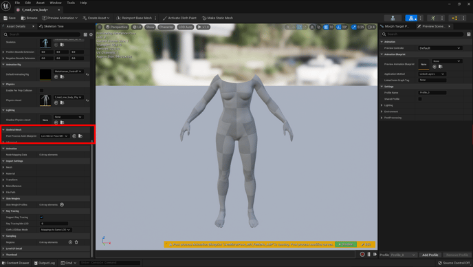
- Save the skeletal mesh file
- From the menu bar across the top of the Skeletal Mesh editor window, click the Create Asset dropdown, then Create PoseAsset, then Current Pose, then select a folder in your project into which you want to save the new Pose Asset.
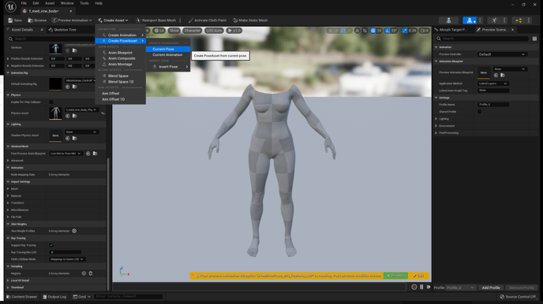
- Open the new Pose Asset you just created.
- In the Asset Details pane, in the Additive section, ensure that Additive is NOT ticked. If you have to untick this box, click the Convert to Full Pose button to the far right of the Additive text box.
- Across the bottom of the preview pane will be a yellow notice indicating if the post processing blueprint is enabled or disabled, along with a green button to toggle it on or off. Ensure the post processing blueprint is enabled before beginning the pose creation process.
- With the Live Mirror Pose blueprint enabled, any manipulation of the upperarm_l bone or any of its child bones will be automatically reflected on the right side of your character.
Creating Reference Poses (WIP)
Detailed instructions for creating reference poses can be found here: <link>. Below is an overview of the process for creating reference poses and
- Open the Pose Asset you will be using to store your character’s retargeting reference poses.
- In the Skeleton Tree pane within the Pose Asset window, manipulate the character’s hand bones to create each of the 7 key poses listed below. To avoid conflict between the pose names for your character and any other pose references you create for other characters, we recommend that you append the pose names with your character’s name.
- Paddle_<your character name>
- PaddleL_<your character name>
- PaddleLSplayed_<your character name>
- Reach_<your character name>
- PaddleThumbCurl_<your character name>
- PaddleThumbCurlSplayed_<your character name>
- Fist_<your character name>
Multi-Performer Support (Unreal Engine 5.2+)
In Hand Engine PRO, multiple performers are supported for streaming to Unreal Engine 5.2-5.4 via Live Link. When multiple performers are added, these will appear as additional LiveLink Subjects under Window -> Virtual Production -> Live Link. The additional subjects can be assigned to a rig's Live Link Pose Blueprint node for the left and right hands.
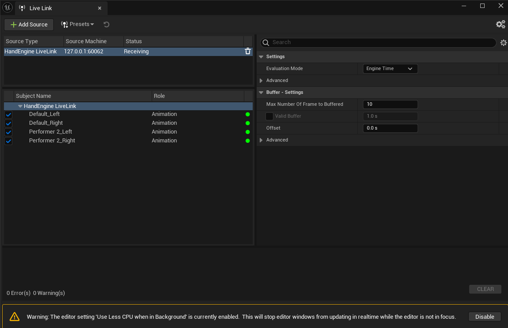
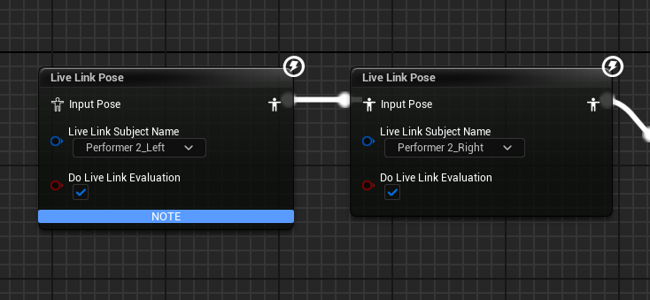
1. In Hand Engine, with two pairs of gloves connected, add a second performer and give it a memorable name. We advise using English characters to avoid potential issues.
2. Assign the second performer the second pair of gloves and calibrate them.
3. In Unreal Editor, go to Window -> Virtual Production -> Live Link and toggle on the additional subjects that match the name defined in step 1.

4. Add the HandEngine_Rig_Examples -> Manny -> HandEngine_Rig_Example_Manny to your map so it is visible in the Editor viewport.
5. Add the HandEngine_Rig_Examples -> Quinn -> HandEngine_Rig_Example_Quinn to the map.
6. Under HandEngine_Remapping_Examples -> Quinn -> Files open the HandEngine_Remap_Quinn_ABP blueprint.
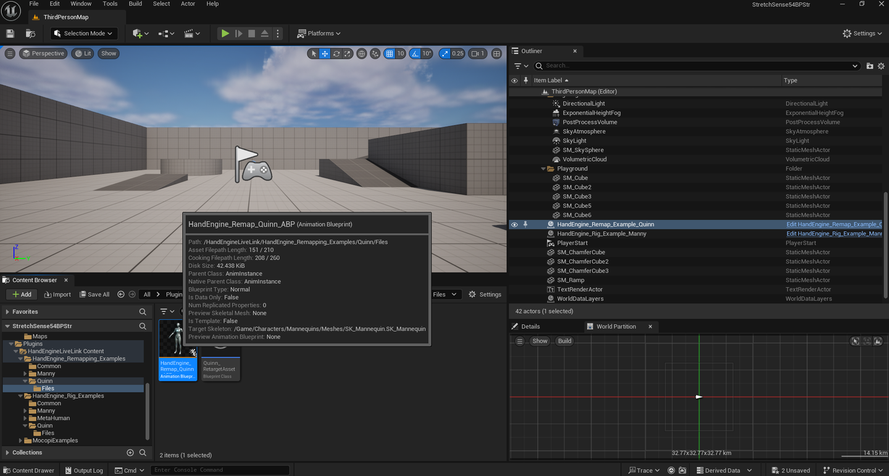
7. Change the Live Link Pose nodes Live Link Subject Name field to SECOND_PERFORMER_NAME_Left and SECOND_PERFORMER_NAME_Right for both Live Link Pose nodes, where SECOND_PERFORMER_NAME is the name of the performer set in Step 1.
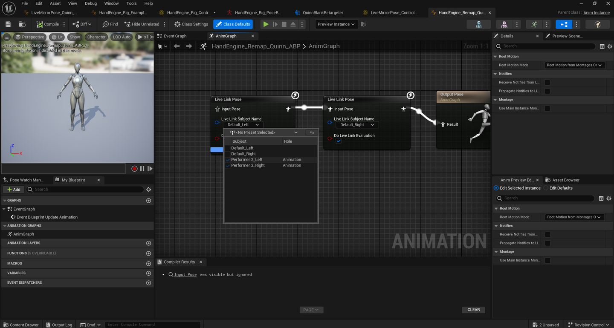
8. Press Play in the Unreal Editor and check that both the Manny and Quinn rigs animate their fingers when both pairs of gloves move.